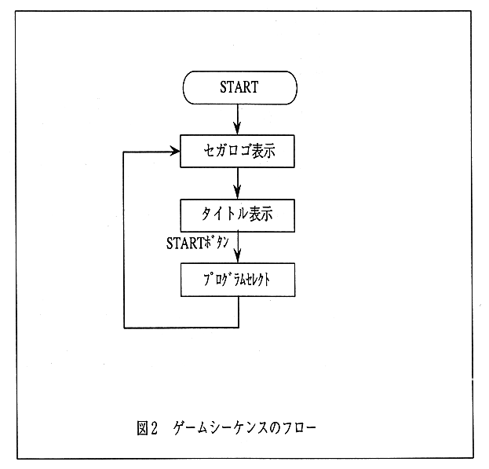

Return to previous page ｜ Return to menu ｜ Go to next page
-
3. Game sequence
- Figure 2 shows the game sequence as a flowchart. This flow is expressed in the program using a status flag called a game mode variable.

Figure 2 Game sequence flow
Return to previous page ｜ Return to menu ｜ Go to next page